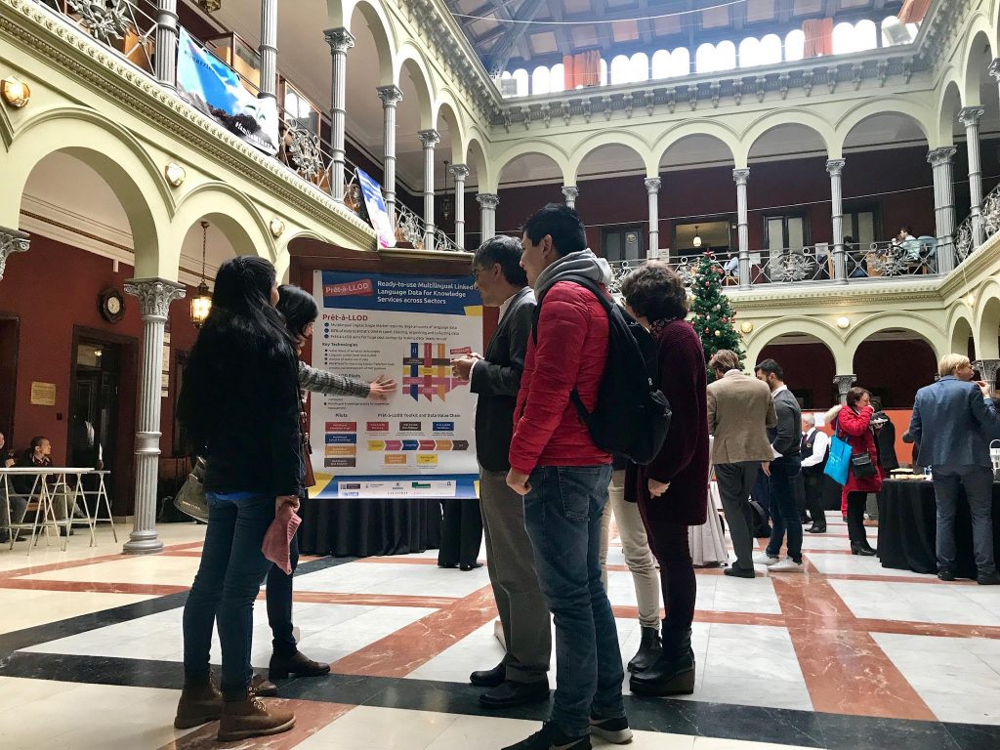

The 32nd International Conference on Legal Knowledge and Information Systems (JURIX 2019 https://jurix2019.oeg-upm.net/) took place this year in Madrid on December 11th-13th, organised by Universidad Politécnica de Madrid (UPM). This conference gathers international experts on Artificial Intelligence and Law, and language technologies played a central role --law mostly consists of a body of written documents. Together with the main conference, two side events where organised --one convening the regtech industry, one convening experts on NLP in the legal domain. Over 250 people were registered to these events. In this second one, named "IberLegal: NLP for Legal Domain in Languages of the Iberian Peninsula", Prêt-à-LLOD was verbally presented before the poster was exhibited in the main conference hall (see photo below). Call for Prêt-à-LLOD: there is a need for language resources in the legal domain, especially for non-English languages.